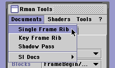
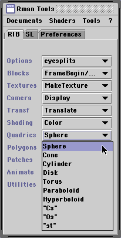
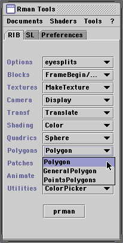
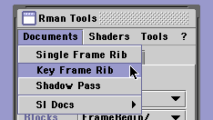

Cutter Help
Shader Testing
[return to index]
- Contents
- Overview
- Single Frame Test
- Keyframe Animation Test
Overview
After the source code for a shader has been successfully compiled it can be
tested by using the shader to render a single frame or an animation. In general
its best to use Cutters facility of generating a single frame RIB file before
proceeding to its other option of making a keyframe animation file. This help
document shows you how to do both.
Single Frame Test
From the Rman Tools Documents menu choose Single Frame Rib.

Cutter will open a new document window containing a template RIB document.
The name and default parameters of the shader to be tested will appear in
the RIB file.
Save the document and click the render button at the bottom
of the Rman Tools palette. If you are using prman the button will be labelled
"prman". When using BMRT the button will be titled "rendrib".
The default geometry on which the shader will be tested is a simple four
sided polygon. If you wish to test the shader on other geometry insert the
cursor before or after the Polygon RIB statement and choose either a Quadric or another
Polygon from Rman Tools popups, ie.
 
Cutter will insert the appropriate RIB statement into your document.
Keyframe Animation Test
When you are satified with the effect of the shader Cutter can be used to
generate a keyframe animation document.
Cutters keyframe document structure affords you a relatively convenient
way of specifying the parameter values of your shader for the starting
and ending frames of an animation sequence ie. "keyframe 1" and a "keyframe 2".
From the Rman Tools Documents menu choose Key Frame Rib.

Cutter will open a new document in which the previously defined single
frame scene is duplicated twice - once for keyframe 1 and again for
keyframe 2. Edit the parameter values you wish to animate.
After saving the keyframe document with a ".key" file extension,
click the render button at the bottom of the Rman Tools palette. The
renderer will produced a sequence of numbered TIFF files that will be saved
to the "frames" directory specified in the prefs.ini file, for example,
path.user.frames "G:/ca301/frames"
At the top of the document notice the following lines of code,
Tween "from" 1 "to" 2 "frames" 30
#Tween "output" 1
Tween "output" "all"
Cutter outputs the information contained within the pairs of keyframes into
a sequence of FrameBegin/FrameEnd blocks contained in a properly structured
RIB file. It is not the keyframe document that is rendered but rather the
output RIB file that is produced as a result of Cutter pre-processing the
keyframe document.
More than two keyframes are allowed, for example, suppose three KeyFrameBegin/KeyFrameEnd
blocks were specified then the Tween statement might look like this,
Tween "from" 1 "to" 2 "frames" 30
Tween "from" 2 "to" 3 "frames" 30
#Tween "output" 1
Tween "output" "all"
Either a specific frame number or all the frames can be rendered. The default
frame count is 30 but this can be changed to any value. Viewing the image
sequence is probably most conveniently done using Apples QuickTime Player Pro.
I anticipate having a sequence viewer built into Cutter by version 2.0. In
which case there will be no need to use "external" software.
|